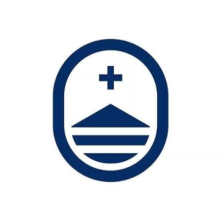

Toda señal cuenta
Comienza en el acceso principal. Encuentra el cartel “Fragmento I”.

SACRÉ COEUR EXPEDIENTE SC-03 / ACCESO DE CAMPOGuía de montaje ↗Sin datos. Sin conexión. Sin decisiones.
Tenés una cámara. Reactivá el sistema.
Una falla ficticia dejó fuera de línea el núcleo digital de Sacré Coeur. El protocolo de respaldo está dividido en tres nodos físicos. Tu misión: recuperar sus señales y descubrir qué convierte la tecnología en valor.
Cámara necesaria · Sin instalar aplicaciones · Progreso en este dispositivo
Comienza en el acceso principal. Encuentra el cartel “Fragmento I”.
Permite la cámara y encuadra todo el cuadrado negro con buena luz. Mantén la imagen quieta.
Sigue cada pista. Los tres nodos reactivan el núcleo y revelan el tesoro virtual.
Busca el marcador I en el acceso principal.